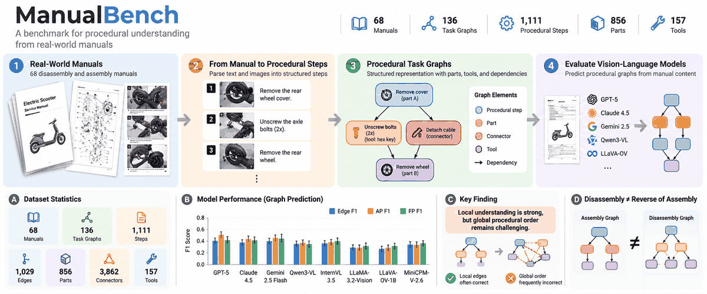
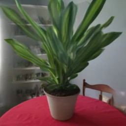
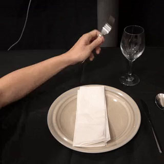
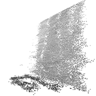
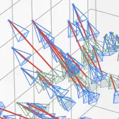
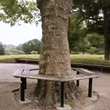

|
Hemant Kumar I am a 5th-year Ph.D. student in Robotics within the Department of Mechanical Engineering at the University of Maryland, College Park, advised by Prof. Nikhil Chopra in the Semi-Automation and Systems (SAS) Lab. I received my Dual Degree (B.Tech and M.Tech) in Aerospace Engineering from the Indian Institute of Technology Kharagpur, where I completed my Bachelor's and Master's thesis with Prof. Chetan S. Mistry in the Turbo-Machines Research Lab. My research interests lie at the intersection of robotics, control theory, and generative AI. I focus on developing learning and control-based methods for contact-rich robotic manipulation, enabling robots to act safely and adaptively in complex real-world environments. |

News🎉 2026: Accepted and Presented: Do Multimodal Foundation Models Understand Assembly Procedures? at Creativity in Assembly @ IROS 2026. 🎉 2026: Toward Generalizable Robotic Disassembly: A Visuo-Tactile Pipeline for Screw Unfastening accepted to Robotics and Autonomous Systems. 2026: Future Faculty Program Travel Award, University of Maryland. 2025: Invention of the Year Award Finalist, University of Maryland, for RACE: Real-Time Adaptive Camera Intrinsic Estimation. 2023: Dean's Fellowship, University of Maryland, College Park. |
PatentsUS provisional patents from my research on autonomous robotic disassembly of EVs. |
|
|
RACE: Real-Time Adaptive Camera Intrinsic Estimation
Hemant Kumar (Lead Inventor), Kaustubh Joshi, Nikhil Chopra US provisional patent (Invention of the Year Award Finalist, UMD 2025) A real-time adaptive camera-intrinsic estimation method for reliable robotic perception and calibration. |

|
UniScrew: Electronically Actuated Universal Electric Screwdriver Adapter for Any Robot Arm
Piyush Goenka, Hemant Kumar, Kaustubh Joshi, Alexander Beyer, Tianchen Liu, Nikhil Chopra US provisional patent A universal electronically actuated screwdriver adapter for robotic screw unfastening and disassembly. |
Research / PublicationsI work on robot learning, multimodal perception, adaptive control, and trustworthy robotics, with an emphasis on autonomous disassembly, contact-rich manipulation, and real-time camera calibration for reliable robotic perception. |
|
 |
Benchmarking Vision-Language Models for Disassembly Tasks
Hemant Kumar, Jamin, Sangeethaa Sivakumar, Nikhil Chopra AAAI, 2027, under review A multimodal benchmark for evaluating vision-language models on real-world assembly and disassembly reasoning tasks. |
|
 |
Generalizable Adaptive Camera Calibration for Zoom-Adaptive 3D Gaussian Splatting
Hemant Kumar, Nikhil Chopra CVPR, 2027, submitting Adaptive camera calibration methods for zoom-adaptive 3D reconstruction and Gaussian Splatting. |
|
 |
DAWN: Visuomotor Diffusion Policy for Imitation Learning for Contact-Rich Manipulation
Hemant Kumar, Piyush Goenka, Nikhil Chopra ICRA, under review A diffusion-policy framework for learning contact-rich robotic manipulation skills from demonstrations. |
|
 |
RACE: Real-Time Adaptive Camera-Intrinsic Estimation via Control Theory
Hemant Kumar, Kaustubh Joshi, Nikhil Chopra IEEE Transactions on Robotics, 2026, under review A control-theoretic framework for real-time adaptive camera-intrinsic estimation with convergence guarantees. |
|
|
DAWN: Hierarchical Diffusion Policies for Contact-Rich Robotic Unfastening
A hierarchical diffusion-based framework for autonomous robotic unfastening, evaluated on 1500+ physical trials with a Franka Emika robot. |

|
Do Multimodal Foundation Models Understand Assembly Procedures?
Hemant Kumar, Jamin, Sangeethaa Sivakumar, Nikhil Chopra Creativity in Assembly Workshop @ IROS, 2026 A study of whether multimodal foundation models can understand assembly procedures from manuals and infer structured robotic task graphs. |
|
 |
Adaptive Control Wrapper for Foundation Robotics Models
A control-theoretic wrapper over foundation robotics models, single-policy networks, and VLA models for real-time adaptation under uncertainty. |
|
 |
Real-Time Adaptive Camera Calibration for Nonlinear Wide-Angle Camera Models
A unified adaptive calibration framework for nonlinear wide-angle camera models for reliable 3D reconstruction, mapping, and localization. |
Previous ResearchBefore my Ph.D., I worked on aerodynamic design and performance analysis of turbomachinery systems in the Turbo-Machines Research Lab at IIT Kharagpur. |
|
|
Implementation of Similarity Principle and Scaling Laws for Low-to-High Speed Mixed Flow Compressor
Hemant Kumar, Chetan S. Mistry ASME Turbo Expo, 2023 |
|
|
Tip Clearance Mechanism in Mixed Flow Compressor
Hemant Kumar, Chetan S. Mistry Propulsion and Power Research, 2023 |
|
|
Numerical Investigations on Aerodynamic Design Criteria for Low Speed Mixed Flow Compressor
Hemant Kumar, Chetan S. Mistry ASME GTIndia, 2021 |
|
|
Numerical Performance and Flow Field Study of Centrifugal Compressor with Supercritical Carbon Dioxide
Hemant Kumar, Chetan S. Mistry ASME GTIndia, 2019 |
|
Website template adapted from Jon Barron. |